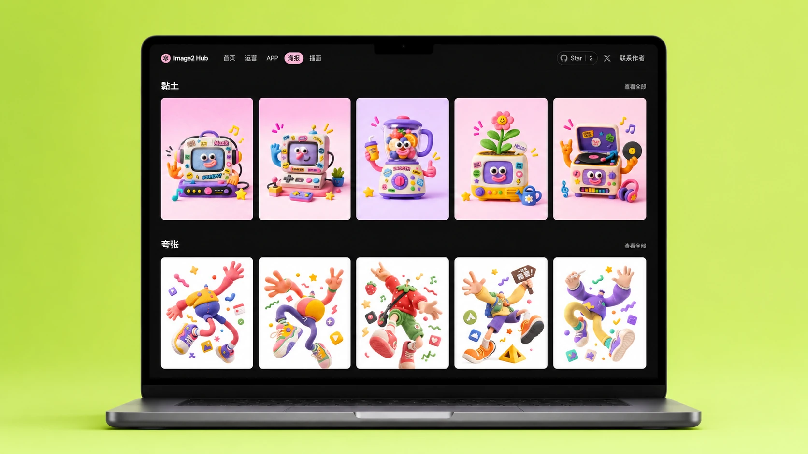
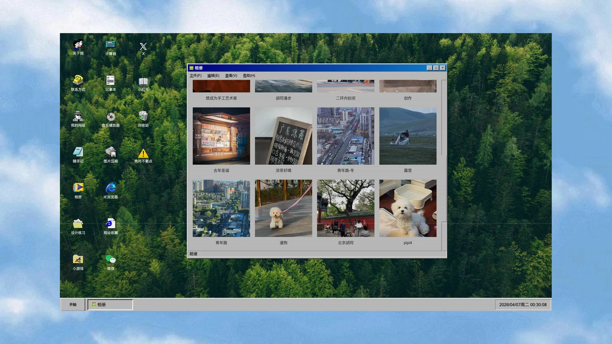
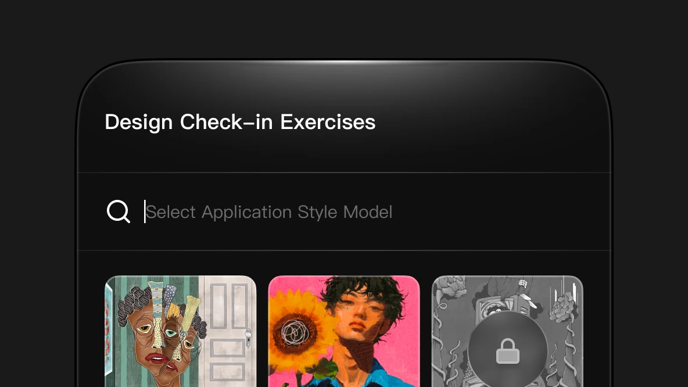
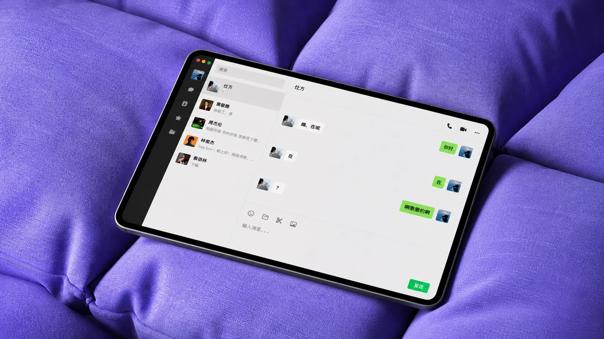
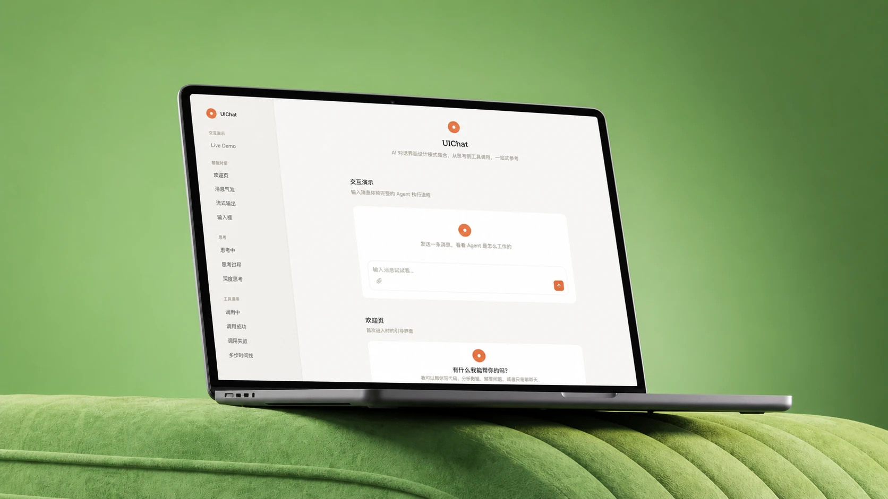

HI, I'M SHIFANG HOU, A UI/UX PRODUCT DESIGNER
FOCUSED ON AI PRODUCT DESIGN AND EXPLORATION.
HI, I'M SHIFANG HOU, A UI/UX PRODUCT DESIGNER
FOCUSED ON AI PRODUCT DESIGN AND EXPLORATION.
写给设计师的 AI 协作开发实践笔记。

给设计师的 AI 图片提示词集合，覆盖 APP、运营、海报与插画。

把 1995 年的 Windows 搬进 2026 年的浏览器。

抛开规范与逻辑，每天一份自由的视觉表达。

在浏览器里和 AI "聊微信"，对话即体验。

AI 对话界面的设计模式集合，从思考到工具调用一次看全。
关于设计、AI 和生活的零散思考。